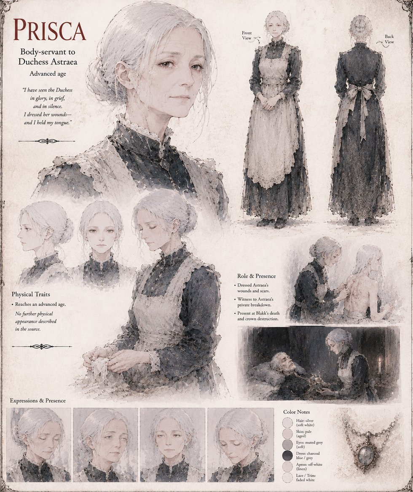

Prisca
Body-servant to Duchess Astraea
Body-servant to Duchess Astraea for eleven years, and the one person who sees her mistress somewhere past the composure four centuries of House Astraea trained into her. She goes into Astraea's tent the night after the Standing at Illmere Ford against her own better judgment, sits with her on the cold ground, and hears the four words Astraea never repeats to anyone else: he offered, I refused.
She serves as the last keeper of Astraea's private ledger after her death, and is one of the four people Blakk confesses everything to in his final hour, alongside Harn and Petrin. She is the one voice in that room who argues, quietly, that burying the king's own last truth is not quite the mercy the other three take it for — and never claims, afterward, that she was talked out of believing it.
“I have seen the Duchess in glory, in grief, and in silence. I dressed her wounds, and I held my tongue.”
Appears in The Vessel of Unmediated Grace